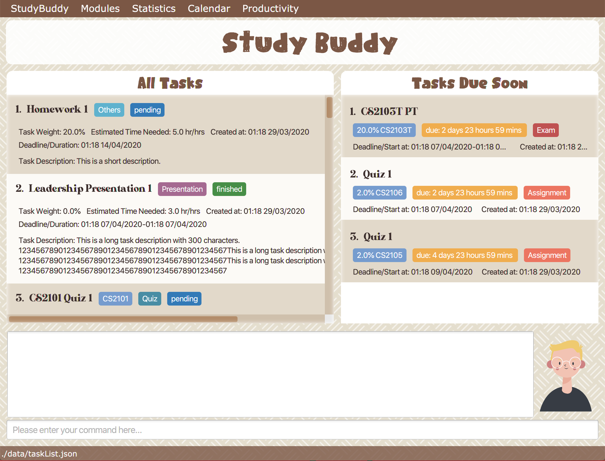

By: Team Drag&Drop Since: Jan 2020
1. Introduction
StudyBuddy is for an application designed for those who prefer to use a desktop app for managing module related tasks. More importantly, StudyBuddy is optimized for those who prefer to work with a Command Line Interface (CLI) while still having the benefits of a Graphical User Interface (GUI). If you can type fast, Study Buddy can get your module management done faster than traditional GUI apps. Interested? Jump to the Section 2, “Quick Start” to get started. Enjoy!
2. Quick Start
-
Ensure you have Java
11or above installed in your Computer. -
Download the latest
studybuddy.jarhere. -
Copy the file to the folder you want to use as the home folder for your Study Buddy.
-
Double-click the file to start the app. The GUI should appear in a few seconds.
 -
Type the command in the command box and press Enter to execute it.
e.g. typinghelpand pressing Enter will display a list of commands you can use. -
Some example commands you can try:
-
To list all tasks
list
-
To add a task named
Economics Homeworkto the listadd
Economics Homework
1
18:00 23/03/2020
-
To delete a task at index 1 in the list
delete
1
-
To exit the application
bye
yes
-
-
Refer to Section 3, “Features” for details of each command.
3. Features
3.1. Basic features
Command Format
-
Words in
UPPER_CASEare the parameters to be supplied by the user e.g. inadd n/NAME,NAMEis a parameter which can be used asadd n/John Doe. -
Items in square brackets are optional e.g
n/NAME [t/TAG]can be used asn/John Doe t/friendor asn/John Doe. -
Items with
… after them can be used multiple times including zero times e.g.[t/TAG]…can be used ast/friend,t/friend t/familyetc. -
Parameters can be in any order e.g. if the command specifies
n/NAME p/PHONE_NUMBER,p/PHONE_NUMBER n/NAMEis also acceptable.
3.1.1. Viewing help : help
Format: help
3.1.2. Adding a task: add
Adds a task to the study buddy
Format: add n/NAME d/DATE e/DETAILS l/LABEL [t/TAG]…
| A task can have any number of tags (including 0) |
Examples:
-
add n/Kattis Problem d/2020-03-12 e/Minimum Spanning Tree problem l/blue -
add n/Post-Lecture Quiz t/schoolwork d/2020-04-12 e/For Lecture 7 l/green t/CS2103T
3.1.3. Listing all tasks : list
Shows a list of all tasks in the study buddy.
Format: list
3.1.4. Editing a task : edit
Edits an existing task in the study buddy.
Format: edit INDEX [n/NAME] [d/DATE] [e/DETAILS] [l/LABEL] [t/TAG]…
Examples:
-
edit 1 d/2020-05-19 e/tough assignmentand
Edits the date and details of the 1st task to be `2020-05-19tough assignmentrespectively. -
edit 2 n/Database project t/
Edits the name of the 2nd task to beDatabase projectand clears all existing tags.
3.1.5. Locating tasks by name: find
Finds tasks whose names contain any of the given keywords.
Format: find KEYWORD [MORE_KEYWORDS]
Examples:
-
find John
ReturnsjohnandJohn Doe -
find Betsy Tim John
Returns any task having namesBetsy,Tim, orJohn
3.1.6. Deleting a task : delete
Deletes the specified task from the study buddy.
Format: delete INDEX
Examples:
-
list
delete 2
Deletes the 2nd task in the study buddy. -
find Betsy
delete 1
Deletes the 1st task in the results of thefindcommand.
3.1.7. Clearing all entries : clear
Clears all entries from the study buddy.
Format: clear
3.1.8. Exiting the program : exit
Exits the program.
Format: exit
3.1.9. Saving the data
Address book data are saved in the hard disk automatically after any command that changes the data.
There is no need to save manually.
3.2. DashBoard
Your menu where all the things you want to see from the app is right here. By default, it shows the following:
-
The impending task from the task list, sorted by timing
-
A chart of the amount of time you spend on each of your modules
-
Existing stopwatches that are already running
3.3. Statistics
On the Statistics page, your usage statistics are displayed. You can use it to see how you can improve your time management and productivity. These include:
-
Number of tasks completed this week
-
Number of deadlines met this week
-
Number of deadlines missed this week
-
-
Time spent on work this week
-
Longest streak of deadlines met
3.4. Timers
The Timer feature comprises several other features that manage time. Students can use it to plan their schedule, taking into account the various quizzes, assignments and deadlines they have. Features like that include:
-
An integrated calendar to help visualise your schedule
-
An alarm that notifies you when a deadline is approaching and also postpone them, like a snooze
-
A reminder/countdown system. Something like LumiNUS but you can create one for anything you want
-
A stopwatch, which you can use to time how long you spent on the task
3.5. UI
You can customize the appearance of your app. You can change the colour of the background, as well as for different modules
3.6. Profile
The profile page shows the detail information of the user, such as:
-
Personal information, such as name, gender, year of study
-
Goal CAP
-
Task history
-
etc
3.7. Piechart
The application provides a summary of the information below using different piechart. These include:
-
The breakdown grades for each assessment in the same module.
-
The number of different types of assessment in the same module.
-
The number of different tasks in different modules.
-
The time cost for each module, thus the user can better manage their time.
4. FAQ
Q: How do I transfer my data to another Computer?
A: Install the app in the other computer and overwrite the empty data file it creates with the file that contains the data of your previous Study Buddy folder.
5. Command Summary
-
Add
add n/NAME p/PHONE_NUMBER e/EMAIL a/ADDRESS [t/TAG]…
e.g.add n/James Ho p/22224444 e/jamesho@example.com a/123, Clementi Rd, 1234665 t/friend t/colleague -
Clear :
clear -
Delete :
delete INDEX
e.g.delete 3 -
Edit :
edit INDEX [n/NAME] [p/PHONE_NUMBER] [e/EMAIL] [a/ADDRESS] [t/TAG]…
e.g.edit 2 n/James Lee e/jameslee@example.com -
Find :
find KEYWORD [MORE_KEYWORDS]
e.g.find James Jake -
List :
list -
Help :
help